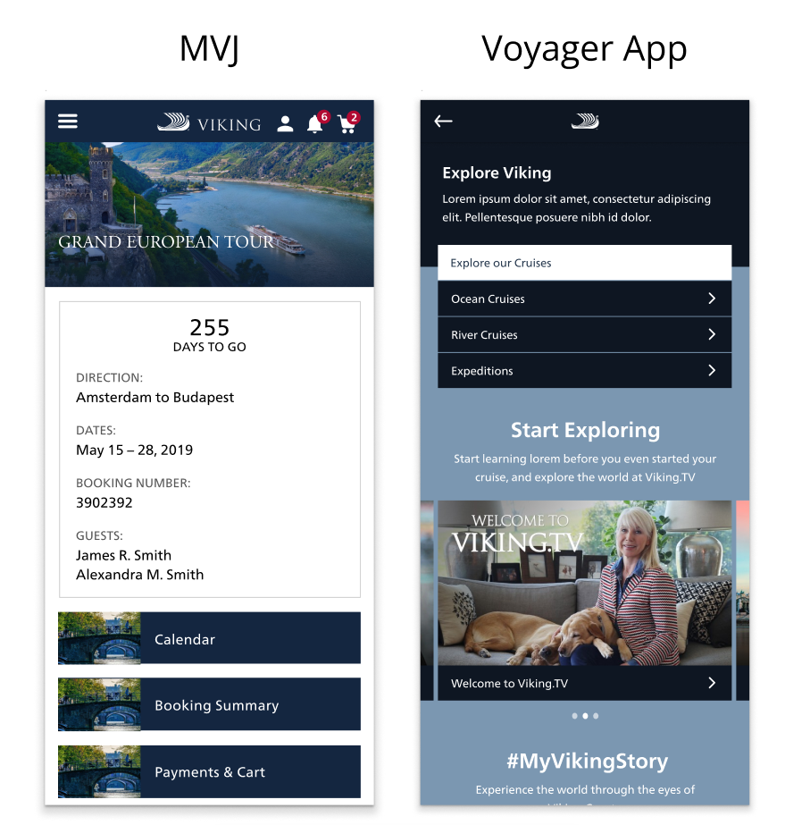
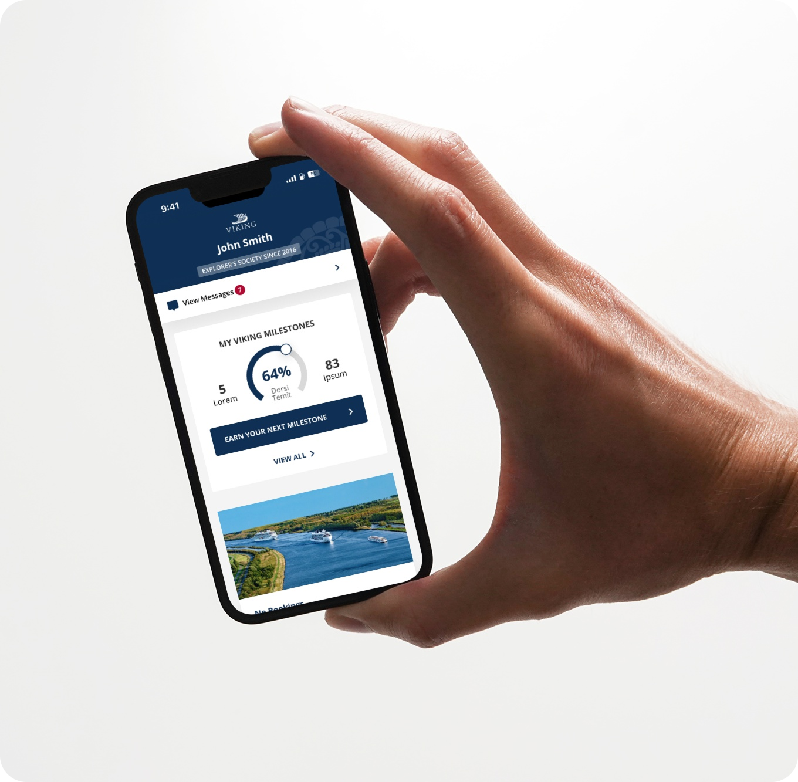
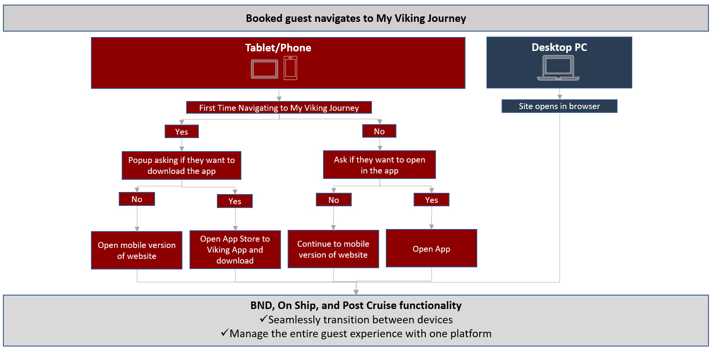
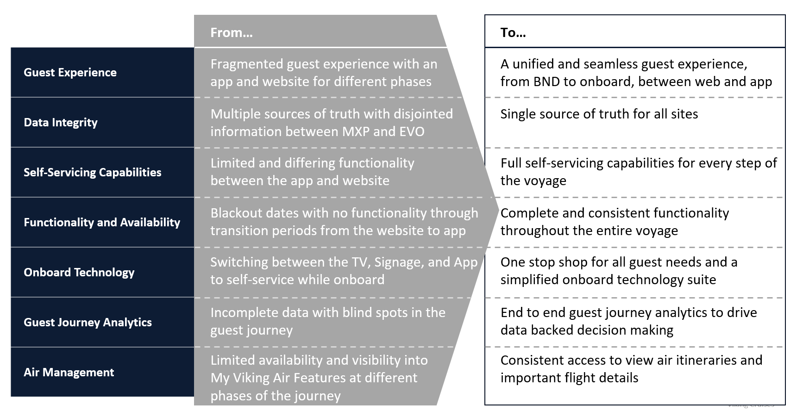
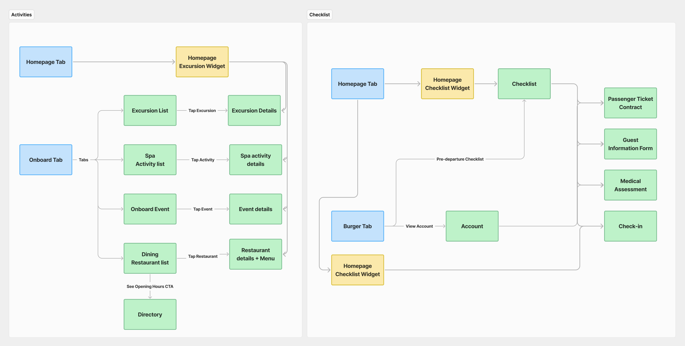
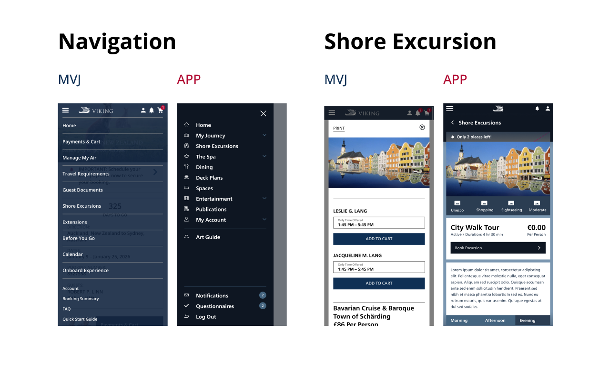
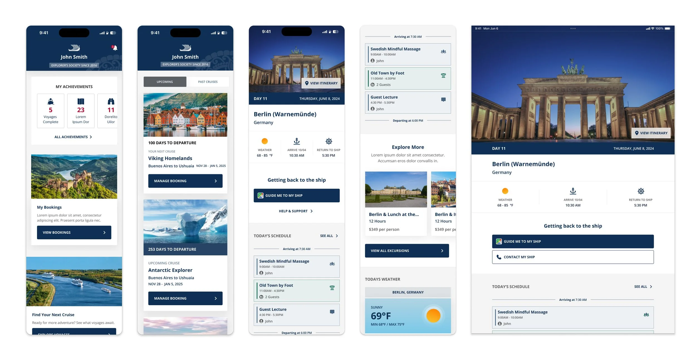
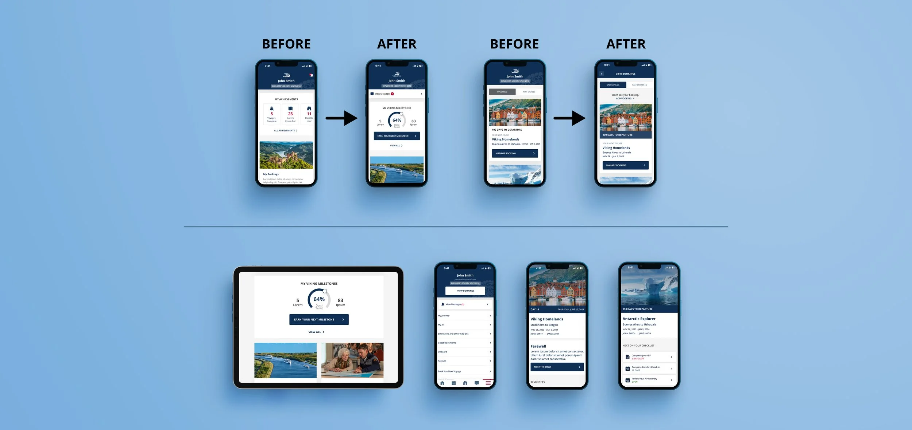

Case Study
Seamless travel, all in one place
This project aimed to transform Viking's digital ecosystem by rebuilding the My Viking Journey (MVJ) website and the Viking Voyager App (App) into a unified, seamless digital experience. The goal was to enhance every stage of the guest journey—before, during, and after a cruise—by eliminating functional gaps, addressing usability issues, and meeting the growing expectations for mobile-enabled experiences.
I was involved in this project from the early stages, collaborating with Viking and the external design agency hired for the initial work. During the onboarding process, I participated in key meetings to provide insights into our existing user experiences and facilitated a smooth handoff of our design system and style guide. Once the agency completed their deliverables, I stepped in to take ownership of the project, ensuring its successful progression to completion.
Disjointed User Experience: The existing app and website lack cohesion, creating challenges for users during key phases like booking, in-transit, and post-trip.
Low Adoption and Awareness: Guests depend on call centers and onboard staff due to subpar digital experiences.
Functional Gaps: Limited features and inconsistent performance lead to gaps in user engagement, especially during offline periods.

To develop a mobile-first digital companion platform that:


We pinpointed the core pain points and business objectives, aiming to address critical problem areas with targeted solutions. By establishing key performance indicators (KPIs) centered around these challenges, we focused specifically on search categories and category touch-points to guide our efforts moving forward.

A well-structured sitemap is the foundation of a seamless user experience. By mapping out the site's hierarchy, we identified opportunities to streamline navigation, reduce friction, and guide users towards key actions effortlessly.

Currently, the App and MVJ operate as two distinct products, although they offer overlapping functionalities. Upon initially booking their cruise, users access MVJ to book excursions, review itineraries, and perform similar tasks. After boarding the ship, they switch to the App, which provides much of the same functionality. This separation leads to challenges in two key areas:
Visual Identity: A comparison of the two experiences reveals a lack of cohesive branding. The two products do not present a unified look and feel, making it difficult for users to perceive them as part of the same brand.
Accessibility: Users can easily log into MVJ via the Viking website. The App requires the user to, well, you know, download the app. Not an ideal experience to juggle the two and impairs the overall user experience.

This project progressed rapidly, and the design agency we collaborated with promptly produced high-fidelity designs. While these designs were aesthetically pleasing and well-developed in terms of user interface, they fell short in achieving our user experience goals. Despite the time constraints, their assistance was invaluable, providing us with an excellent foundational starting point.

With a clear foundation established, it was essential to deepen our focus on user experience design. While the design agency provided us with a solid starting point, they did not fully develop the comprehensive experience we needed. Key components for the integrated app were still outstanding, including features such as Gamification, Login/Create Account functionality, a dynamic Message Center, a section for booking your next cruise, and much more. These were the elements I was tasked with conceptualizing and designing. The absence of these features would prevent users from experiencing the full potential of MVJ and the App.

User testing and behavioral analytics provided key insights into pain points and opportunities. By applying these findings, we optimized the design to better align with user expectations and needs.
Data Points: